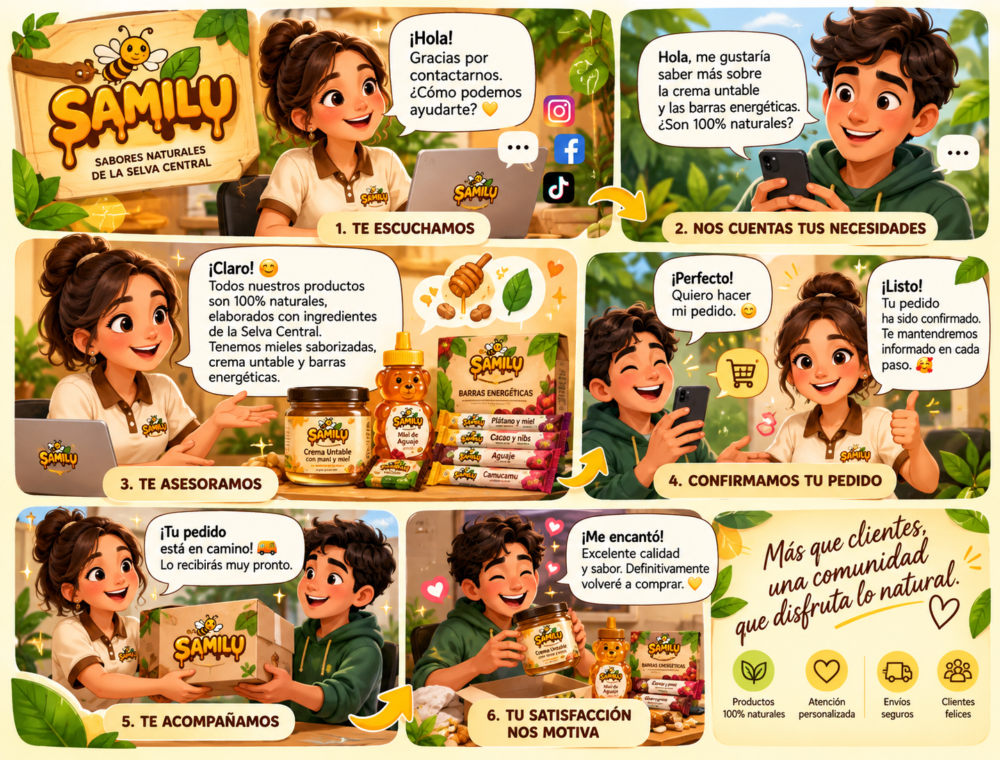

Hablamos como somos. Cercanos, claros y naturales.
SAMILU utiliza una comunicación cercana, amigable y sencilla para transmitir confianza, calidad y el sabor natural de la Selva Central.
Una voz que se siente cercana
El lenguaje de SAMILU debe ser cercano, amigable y sencillo, transmitiendo confianza, calidad y el sabor natural de la Selva Central.

Donde está nuestro público
SAMILU utilizará Facebook, Instagram y TikTok para mantener una presencia cercana y visual en sus principales canales digitales.
Una frase que permanece
El eslogan refuerza la personalidad de la marca y busca dejar una idea fácil de recordar.
Cada palabra también construye marca.
La comunicación de SAMILU busca mantener una voz coherente, cercana y fácil de reconocer en cada contacto con el público.